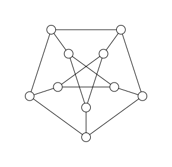

Computational complexity (WIP)
In the previous chapter, we discussed the spin-glass problem and mentioned that it is a hard problem to solve but did not explain why it is widely believed to be hard. In this chapter, we will introduce the basic concepts of computational complexity theory, which is the study of when and why some problems are hard to solve. Here, hard in the context of computational complexity theory means that the time or space required to solve the problem grows faster than polynomial (e.g. exponential) with the size of the input. We will discuss the complexity of algorithms and problems and the concept of NP-completeness and the P vs NP problem. We will also discuss several algorithms and techniques for solving hard problems, such as simulated annealing and branch-and-bound algorithms. The following two books are highly recommended for further reading:
- The Nature of Computation by Moore and Mertens[Moore2011]
- Exact Exponential Algorithms by Fomin and Kaski[Fomin2013].
Problems that can be verified in polynomial time
In this section, we want to discuss a seemingly trivially correct but unproved statement: the hardness to solve a problem is not the same as the hardness to verify a solution.
To narrow the discussion we will focus on decision problems, which are problems that have a yes/no answer. We require that the answer can be verified in polynomial time. This means that given a solution to the problem, we can check whether it is correct in polynomial time. This is known as the class $NP$ (non-deterministic polynomial time).
Interestingly, it is not yet proved that any problem in $NP$ cannot be solved in polynomial time (complexity class $P$). The question of whether $P = NP$ is one of the most famous open problems in computer science. If $P = NP$, then every problem that can be verified in polynomial time can also be solved in polynomial time.
Maybe the most famous problem that easy to verify but hard to solve is the integer factorization problem, which is the basis of many cryptographic systems.
Input: A $n$ bit integer $x$.
Question: Is there a non-trivial factoring of $x$? i.e. $p \times q = x$ where $p>1$ and $q>1$ are integers.
Given a number and its factors, it is easy to verify that the factors are correct. However, finding the factors in the first place can be very difficult.
Example Given that $x > 1$ and $y > 1$ such that
\[x \times y = 2033\]
find $x$ and $y$.
Solving this problem is not easy. One simple algorithm is to iterate over all possible factors of $x$ and check if they are factors of $n$. The following Julia code shows how to factorize a number using this algorithm:
julia> function factorize(n) for x in 2:floor(Int, sqrt(n)) if n % x == 0 return x, n ÷ x end end return nothing # no factors found endfactorize (generic function with 1 method)julia> factorize(2033)(19, 107)
This algorithm has a time complexity of $O(\sqrt{n})$. In terms of the number of bits of the input $m \approx \log_2(n)$, the time complexity is $O(2^{m/2})$, which is exponential in the input size.
Factoring a number is a hard problem, but is not as hard as some other problems in NP. It can be shown by reducing the factoring problem to another problem in NP. In computational complexity theory, a problem $A$ is said to be reducible to another problem $B$ if an algorithm for any instance of $A$, there is a polynomial-time algorithm that maps the instance of $A$ to an instance of $B$ such that the solution of the instance of $B$ can be used to solve the instance of $A$ in polynomial time. If $A$ is reducible to $B$, we write $A \leq_p B$.
In the following, we show ${\rm Factoring} \leq_p {\rm Circuit SAT}$, where Circuit SAT is a well-known NP-complete problem (the hardest problems in NP).
Input: A Boolean circuit $C$.
Question: Is there an assignment of the inputs to the circuit that makes the output true?
Example Given a Boolean circuit
\[x_3 = (x_1 \lor x_2) \land (\neg (x_1 \land x_2))\]
where $\lor$ is the logical OR, $\land$ is the logical AND, and $\neg$ is the logical NOT. Find an assignment of the inputs $(x_1, x_2)$ that makes the output $x_3 = 1$.
It is easy to verify that the solution is given by the assignment $(x_1, x_2) = (1, 0)$ or $(x_1, x_2) = (0, 1)$. For larger circuits, the problem becomes harder to solve.
Given the fact that any problem in NP can be verified in polynomial time, and any verification program can be encoded as a Boolean circuit. By definition, solving a problem in NP is equivalent to solving the Circuit SAT problem that encodes the verification program. Therefore, the Circuit SAT problem is in NP-complete.
In the following, we will discuss another well known NP-complete problem, the spin-glass problem and show ${\rm Circuit SAT} \leq_p \text{Spin-glass}$.
Input: A graph $G = (V, E)$ and a set of integer coupling strengths $J_{ij}$ for each edge $(i, j) \in E$.
Question: Is there a configuration of spins $\sigma_i \in \{-1, 1\}$ that has an energy below a certain threshold $E_t$? The energy of the system is given by
\[E(\sigma) = \sum_{(i,j)\in E} J_{ij} \sigma_i \sigma_j\]
The spin-glass problem is a problem in statistical mechanics and combinatorial optimization. It is a generalization of the Ising model, where the interactions between the spins are random. The goal is to find the ground state of the system, which is the configuration of spins that minimizes the energy of the system. This problem could be decomposed into finite yes/no questions - the decision problem above.
Example Given a spin-glass that defined on a Petersen graph, the coupling strength is 1. Consider that we use integer variables to store the coupling strength, the size of input is $O(n^2)$ for a general graph of size $n$. Determine whether the energy of the system is below -8? 
Method 1: Generic tensor networks In the following, we use the generic tensor network approach to solve this problem.
julia> using GenericTensorNetworks, Graphsjulia> g = smallgraph(:petersen){10, 15} undirected simple Int64 graphjulia> J = ones(Int, 15)15-element Vector{Int64}: 1 1 1 1 1 1 1 1 1 1 1 1 1 1 1julia> problem = SpinGlass(g, J) # problem instanceGenericTensorNetworks.SpinGlass{Vector{Int64}}(10, [[1, 2], [1, 5], [1, 6], [2, 3], [2, 7], [3, 4], [3, 8], [4, 5], [4, 9], [5, 10] … [1], [2], [3], [4], [5], [6], [7], [8], [9], [10]], [1, 1, 1, 1, 1, 1, 1, 1, 1, 1 … 0, 0, 0, 0, 0, 0, 0, 0, 0, 0])julia> tensor_network = GenericTensorNetwork(problem) # the tensor network with optimized contraction orderGenericTensorNetworks.GenericTensorNetwork{GenericTensorNetworks.SpinGlass{Vector{Int64}}, OMEinsum.DynamicNestedEinsum{Int64}, Int64}(GenericTensorNetworks.SpinGlass{Vector{Int64}}(10, [[1, 2], [1, 5], [1, 6], [2, 3], [2, 7], [3, 4], [3, 8], [4, 5], [4, 9], [5, 10] … [1], [2], [3], [4], [5], [6], [7], [8], [9], [10]], [1, 1, 1, 1, 1, 1, 1, 1, 1, 1 … 0, 0, 0, 0, 0, 0, 0, 0, 0, 0]), 2∘4∘3, 2∘4∘3 -> ├─ 2∘6∘4∘10, 3∘6∘10 -> 2∘4∘3 │ ├─ 2∘6∘4∘10, 2∘10∘4∘6 -> 2∘6∘4∘10 │ │ ├─ 2∘5∘6, 4∘10∘5 -> 2∘6∘4∘10 │ │ │ ├─ 1∘2, 5∘6∘1 -> 2∘5∘6 │ │ │ │ ├─ 2, 2∘1 -> 1∘2 │ │ │ │ │ ⋮ │ │ │ │ │ │ │ │ │ └─ 1∘5, 1∘6 -> 5∘6∘1 │ │ │ │ ⋮ │ │ │ │ │ │ │ └─ 4∘5, 5∘10 -> 4∘10∘5 │ │ │ ├─ 4∘5 │ │ │ └─ 10, 5∘10 -> 5∘10 │ │ │ ⋮ │ │ │ │ │ └─ 2∘10∘7, 4∘6∘7 -> 2∘10∘4∘6 │ │ ├─ 2∘7, 7∘10 -> 2∘10∘7 │ │ │ ├─ 7, 2∘7 -> 2∘7 │ │ │ │ ⋮ │ │ │ │ │ │ │ └─ 7∘10 │ │ └─ 4∘6∘9, 7∘9 -> 4∘6∘7 │ │ ├─ 4∘9, 6∘9 -> 4∘6∘9 │ │ │ ⋮ │ │ │ │ │ └─ 7∘9 │ └─ 3∘8, 6∘10∘8 -> 3∘6∘10 │ ├─ 8, 3∘8 -> 3∘8 │ │ ├─ 8 │ │ └─ 8, 3∘8 -> 3∘8 │ │ ├─ 8 │ │ └─ 3∘8 │ └─ 6∘8, 8∘10 -> 6∘10∘8 │ ├─ 6∘8 │ └─ 8∘10 └─ 2∘3, 3∘4 -> 2∘4∘3 ├─ 3, 2∘3 -> 2∘3 │ ├─ 3 │ └─ 3, 2∘3 -> 2∘3 │ ├─ 3 │ └─ 2∘3 └─ 4, 3∘4 -> 3∘4 ├─ 4 └─ 4, 3∘4 -> 3∘4 ├─ 4 └─ 3∘4 , Dict{Int64, Int64}())julia> minimum_energy = solve(tensor_network, SizeMin())[]-9.0ₜjulia> optimal_config = solve(tensor_network, SingleConfigMin())[](-9.0, GenericTensorNetworks.ConfigSampler{10, 1, 1}(1011011001))ₜ
The tensor network based algorithm has a time complexity of $O(2^{{\rm tw}(G)})$, which is exponential in the treewidth of the graph $G$ - a quantity that upper bounded by the number of vertices. For the Petersen graph, the treewidth is 4. Since in the worst case, the treewidth is $O(n)$, the time complexity is $O(2^n)$, which is exponential in the input size.
Method 2: Integer programming In the following, we use the integer programming approach to solve this problem.
# To be addedMany other algorithms can be used to solve the spin-glass problem. One good reference is the challenge in the GitGub repo: Deep Learning and Quantum Programming: A Spring School
Input: A graph $G = (V, E)$ and weights associated with vertices $\{\mu_{i} \mid i\in V\}$.
Question: Is there a configuration of particles $n_i \in \{0, 1\}$ that has a hard-core lattice gas energy below a certain threshold $E_t$? The hard-core lattice gas energy is given by
\[E(\mathbf n) = \sum_{(i,j)\in E} U_{ij} n_i n_j + \sum_{i\in V} \mu_i n_i\]
where $\mathbf n$ is the configuration of the particles, $n_i$ is the occupation number of site $i$, $U_{ij} \rightarrow \infty$ is the interaction strength between sites $i$ and $j$, and $\mu_i$ is the chemical potential at site $i$.
The hard-core lattice gas energy model describes a gas of particles on a lattice that interact via hard-core repulsion. Each lattice site $i \in V$ can be occupied by at most one particle, and two particles cannot occupy adjacent vertices.
It is a special case of the independent set problem, which asks what is the maximum set of mutually non-adjacent vertices on a graph. The only extra constraint is that the graph is a lattice graph. It turns out that the hard-core lattice gas model is also in NP-complete.
Example
Given a statement and a proof of the statement, it is easy to verify that the proof is correct. However, finding the proof in the first place can be very difficult. This is an example of a problem that can be verified in polynomial time, but may not be solvable in polynomial time.
Problem reduction
The composibility of Hamiltonians
The weighted MIS reduction in Ref.[Nguyen2023] transforms a generic Boolean constraint satisfaction problem (CSP) to a weighted MIS problem. Each clause $C$ in the CSP problem is mapped to a MIS problem on a weighted graph $G=(V, E, \delta)$, where $V$ is the set of vertices, $E$ is the set of edges, and $\delta$ is a mapping from a vertex $v\in V$ to the associated weight $\delta(v)$. An evaluation of a clause can be obtained from a vertex set of the corresponding $G$ by identifying each boolean variable with a vertex $v\in V$. If the vertex $v$ is in the set, the corresponding boolean variable is set to be true, otherwise it is set to be false. We require that any MIS of $G$ corresponds to a solution (or a consistent and complete evaluation) of $C$, while any solution of $C$ corresponds to a MIS of $G$.
We denote such a pair of $(C, G)$ as a weighted MIS gadget. The energy model for the MIS problem on $G$ is
\[H_\text{MWIS}(G) = -\sum_{v \in V}\delta(v) n_v + \sum_{(u, v) \in E} \infty \, n_u n_v,\]
where $n_v \in \{0, 1\}$ is a boolean variable for representing whether the vertex $v$ is in the set or not. The weighted MISs of $G$ are the ground states of $H_\text{MWIS}(G)$. The weighted MIS reduction scheme is based on the observation that weighted MIS problems corresponding to the various clauses are composible, i.e. by adding up the cost functions for each clause, one obtaines a cost function whose minimum that encodes the boolean variable assignment satisfies all clauses. Formally, for any two weighted MIS gadgets $(C_1, G_1)$ and $(C_2, G_2)$, their composition is defined as
\[\begin{split} &\texttt{compose}:((C_1, G_1), (C_2, G_2)) \mapsto (C_1\land C_2, G_1 + G_2),\\ &G_1 + G_2 = (V_1 \cup V_2, E_1\cup E_2, \delta:v\mapsto \delta_1(v)+\delta_2(v)). \end{split}\]
The weight of a vertex in the composed graph is the sum of the weights in the original graphs. $\delta_1$ and $\delta_2$ are the weight functions for $G_1$ and $G_2$ respectively. If a vertex $v$ is absent in $G_1$ or $G_2$, $\delta_1(v)$ or $\delta_2(v)$ is set to $0$.
With composibility, any conjunction of local constraints can be mapped to the addition of the corresponding energy models. By solving the ground state of the composed model, the MISs of the composed graph can be obtained, which encodes the boolean variable assignment that all constraints are simultaneously satisfied.
Please check the demo package: https://github.com/GiggleLiu/ScientificComputingDemos/tree/main/Spinglass [Glover2019].
In Ref.[Nguyen2023], a universal set of weighted MIS gadgets are designed, which enables us to encode any Boolean constraint satisfaction problem to a weighted MIS problem. To further reduce the weighted MIS problem to that on a KSG, a pair of connected vertices must be made physically close to each other. This constraint can be fulfilled by introducing a crossing lattice, in which a vertex in the original graph is mapped to a chain or a tri-branched tree, namely the copy gadget. Copy gadgets are designed to copy the information of a vertex to the vicinity of other vertices, which enables us to equivalently add an edge between any two vertices. To further remove the non-unit-disk subgraphs like crossings from the crossing lattice, weighted crossing gadgets are introduced.
Algorithm: Tropical tensor network
Algorithm: Branching and bounding
The branching algorithm[Fomin2013] is a general algorithm for solving optimization problems. It works by recursively dividing the search space into smaller subspaces and solving each subspace separately. The algorithm starts with the entire search space and divides it into smaller subspaces using a branching rule. It then solves each subspace separately and combines the solutions to find the optimal solution for the entire search space. The algorithm uses a bounding rule to determine when to stop dividing the search space and when to combine the solutions.
Let us use the independent set problem as an example, which is a well-known NP-complete problem. The independent set problem is to find a set of vertices in a graph such that no two vertices are adjacent. The goal is to find the largest independent set in the graph.
The branching algorithm for the independent set problem is as follows:
- Start with the entire graph $G$.
- If $G$ is empty, return the empty set.
- If $G$ has no edges, return all vertices in $G$.
- Otherwise, choose a vertex $v$ in $G$.
- Recursively solve the independent set problem on $G - \{v\}$ and $G - N(v)$, where $N(v)$ is the set of neighbors of $v$.
- Combine the solutions to find the largest independent set in $G$.
Given a graph $G$ with vertices and edges, find the largest independent set in the graph.
Solution
julia> using Graphsjulia> function mis1(g::SimpleGraph) N = nv(g) if N == 0 return 0 else dmin, vmin = findmin(v->degree(g, v), vertices(g)) return 1 + mapreduce(y->mis1((gi = copy(g); rem_vertices!(gi, neighbors(g, y) ∪ [y]); gi)), max, neighbors(g, vmin) ∪ [vmin]) end endmis1 (generic function with 1 method)julia> mis1(smallgraph(:petersen))4
The algorithm has a time complexity of $O(2^n)$, which is exponential in the number of vertices in the graph. In the worst case, the algorithm may need to explore all possible subsets of vertices to find the largest independent set.
The algorithm works by dividing the search space into smaller subspaces by removing a vertex $v$ and its neighbors from the graph. It then solves each subspace separately and combines the solutions to find the largest independent set in the original graph. The algorithm uses a bounding rule to determine when to stop dividing the search space and when to combine the solutions.
Algorithm: Simulated Annealing
Simulated annealing[Cain2023] is a probabilistic optimization algorithm that is used to find the global minimum of an energy function. It is inspired by the process of annealing in metallurgy, where a material is heated and then slowly cooled to increase its strength and reduce its defects. The algorithm starts with a thermal state, where the temperature is high and the system is in a random state. It then gradually cools the system, reducing the temperature and allowing the system to settle into a low-energy state. The algorithm uses a probabilistic acceptance criterion, usually based on the Metropolis-Hastings algorithm, to accept or reject moves that increase the energy of the system. This allows the algorithm to escape local minima and explore the energy landscape more effectively.
For the spin-glass problem, the energy function is given by
\[E(\sigma) = \sum_{(i,j)\in E} J_{ij} \sigma_i \sigma_j\]
where $\sigma_i$ is the spin at site $i$, $J_{ij}$ is the coupling strength between sites $i$ and $j$, and the sum is over all pairs of sites that are connected by an edge in the graph. The goal is to find the ground state of the system, which is the configuration of spins that minimizes the energy of the system.
The simulated annealing algorithm starts with a random initial configuration $\sigma$ and a high temperature $T_H$. The temperature is gradually reduced according to a cooling schedule, such as exponential cooling or linear cooling. For each temperature $T$, the algorithm samples a new configuration $\sigma'$ by flipping a random spin in the current configuration $\sigma$. The algorithm then calculates the change in energy $\Delta E = E(\sigma') - E(\sigma)$ and accepts the move with probability
\[P(\sigma \to \sigma') = \exp(-\Delta E / T)\]
The algorithm repeats this process for a fixed number of steps or until the system reaches thermal equilibrium. The temperature is then reduced according to a cooling schedule, and the process is repeated until the system converges to a low-energy state.
Hands-on
The following demo package contains the code for solving the spin-glass problem using the different approaches: https://github.com/GiggleLiu/ScientificComputingDemos/tree/main/Spinglass
References
- Moore2011Moore, Cristopher, and Stephan Mertens. The nature of computation. OUP Oxford, 2011.
- Fomin2013Fomin, Fedor V., and Petteri Kaski. "Exact exponential algorithms." Communications of the ACM 56.3 (2013): 80-88.
- Liu2021Liu, Jin-Guo, Lei Wang, and Pan Zhang. Tropical tensor network for ground states of spin glasses. Physical Review Letters 126.9 (2021): 090506.
- Liu2023Liu, Jin-Guo, et al. Computing solution space properties of combinatorial optimization problems via generic tensor networks. SIAM Journal on Scientific Computing 45.3 (2023): A1239-A1270.
- Cain2023Cain, M., et al. "Quantum speedup for combinatorial optimization with flat energy landscapes (2023)." arXiv preprint arXiv:2306.13123.
- Nguyen2023Nguyen, Minh-Thi, et al. "Quantum optimization with arbitrary connectivity using Rydberg atom arrays." PRX Quantum 4.1 (2023): 010316.
- Glover2019Glover, Fred, Gary Kochenberger, and Yu Du. "Quantum Bridge Analytics I: a tutorial on formulating and using QUBO models." 4or 17.4 (2019): 335-371.